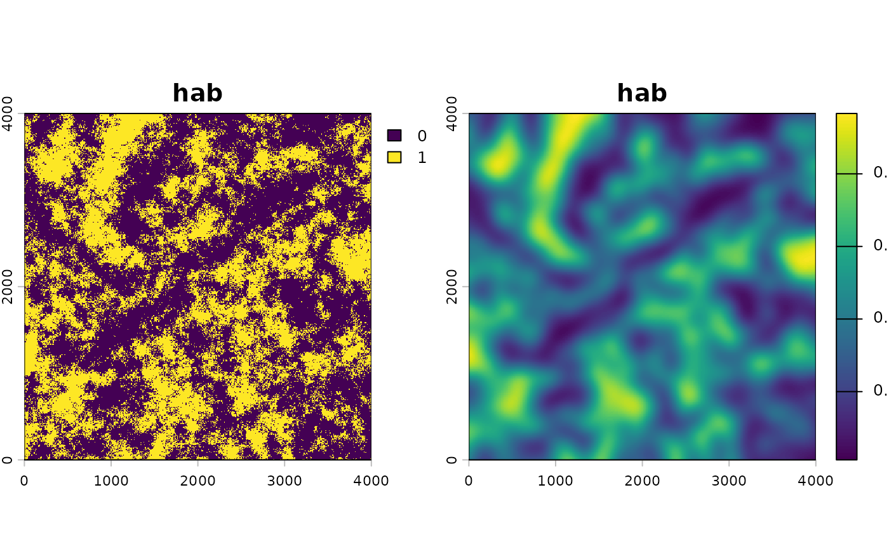
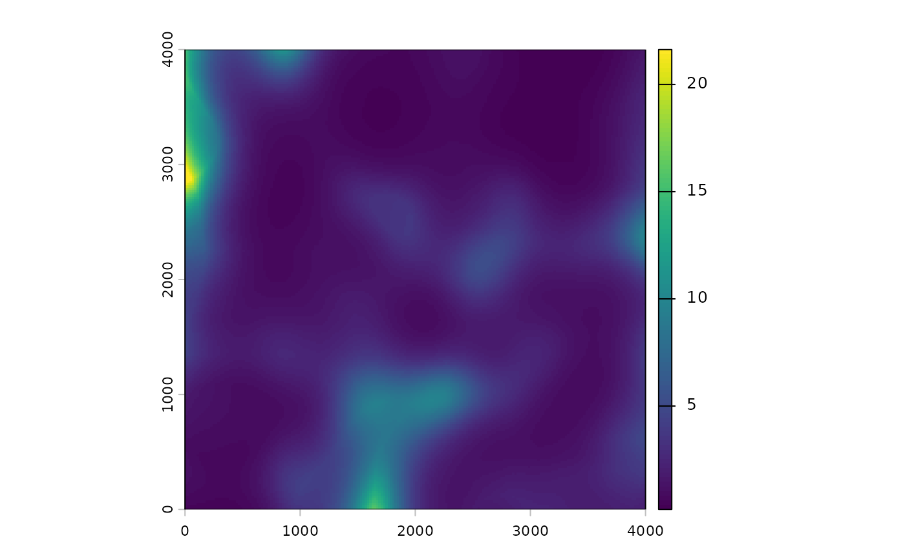

Computes the model covariates (kernel-weighted means, or
declared landscape or surface metrics) for every cell of one or more raster
layers, at the scales estimated by multiScale_optim() or at scales you
supply. The result is a stack of covariate layers that a fitted model can
predict from, so this is the usual first step in mapping a fitted model.
vignette("v03-map-predictions", package = "multiScaleR") works through
projection, extrapolation checks, and clamping.
Usage
kernel_scale.raster(
raster_stack,
sigma = NULL,
multiScaleR = NULL,
shape = NULL,
kernel = c("gaussian", "exp", "expow", "fixed"),
scale_vars = NULL,
pct_wt = 0.975,
fft = TRUE,
scale_center = FALSE,
clamp = FALSE,
pct_mx = 0,
na.rm = TRUE,
verbose = TRUE,
offset_values = NULL,
include_fixed = FALSE,
match_buffer = FALSE,
site_values = NULL,
...
)Arguments
- raster_stack
A
SpatRasterwith the source layer(s). Layer names must match the covariate names used in fitting, or thesourcenames inscale_vars. Use the same map units and cell size as in fitting.- sigma
Numeric vector of kernel scale parameters (or hard radii), in map units. Supply one value per optimized covariate in declaration order when
scale_varsis used, or one per raster layer otherwise. Withoutscale_vars, a length that does not match the number of layers gives a warning and the first value is used for every layer. Ignored whenmultiScaleRis supplied.- multiScaleR
A fitted
multiScaleRobject frommultiScale_optim(), or a preparedmultiScaleR_dataobject fromkernel_prep(). When supplied,sigma,shape,kernel, andscale_varsare taken from it. A fitted object supplies the estimated scales. A prepared object supplies the starting scales ofkernel_prep(). Default:NULL.- shape
Numeric vector of shape parameters for the exponential power kernel (
kernel = "expow"), one per optimized covariate. A hard-radius covariate ignores its shape position. Ignored whenmultiScaleRis supplied. Default:NULL.- kernel
Character. Kernel used for smoothing:
"gaussian"(default),"exp","expow", or"fixed". See multiScaleR-kernels. Ignored whenmultiScaleRis supplied.- scale_vars
Optional covariate specifications from
msr_vars(). Use it to project landscape or surface metrics, or derived covariates, without a fitted object. WhenmultiScaleRis supplied, its specifications are used, and for a fitted model only the covariates in the model formula are projected.- pct_wt
Numeric between 0 and 1 (exclusive). Sets the size of the default smoothing window for kernel means and kernel-weighted surface metrics. The window extends to the line-based (1D) distance that holds
pct_wtof the kernel weight, rounded up to whole cells. Larger values (for example0.99) include more of the kernel tail and take longer. It is not the share of planar weight within the window. Ignored whenmatch_buffer = TRUEand by hard-radius metrics. Default:0.975.- fft
Logical. If
TRUE(default), smoothing uses fast Fourier transform (FFT) convolution, which is much faster for large rasters and wide kernels. SetFALSEfor direct moving-window (focal) calculations. Both engines support kernel means and the declared surface and landscape metrics, with the same support and missing-value rules.- scale_center
Logical. If
TRUE, each smoothed layer is centered and scaled with the mean and standard deviation stored inmultiScaleR$scl_params, so its values match the standardized covariates used in fitting. Required for prediction from a model fitted on standardized covariates, which is the default. NeedsmultiScaleR. Default:FALSE.- clamp
Logical. If
TRUE, standardized values are limited to the range observed at the survey points (moved bypct_mx), which prevents extrapolation beyond the fitted range. Active only whenscale_center = TRUE. Default:FALSE.- pct_mx
Numeric greater than -0.5 and no larger than 0.99. When
clamp = TRUE, each clamping limit moves outward bypct_mxtimes the range of that covariate observed at the survey points:lower = min - pct_mx * (max - min)andupper = max + pct_mx * (max - min), on the standardized scale. For example, a covariate observed from -1 to 3 is clamped to -1.4 and 3.4 withpct_mx = 0.1, and to -0.6 and 2.6 withpct_mx = -0.1. Negative values move the limits inward. Default:0(the exact training range).- na.rm
Logical. If
TRUE(default), missing cells are left out and the weights of the remaining cells renormalize. IfFALSE, any window with a missing cell, including cells beyond the raster edge, returnsNA.- verbose
Logical. Print a progress message for each layer. Default:
TRUE.- offset_values
Named numeric vector of raw input values for variables inside model offsets, such as
c(n_weeks = 4)foroffset(log(n_weeks)). When omitted, a log offset uses 1 (zero on the log scale) and a direct offset uses 0. Set it for a meaningful projection scenario. See Details.- include_fixed
Logical. Set
TRUE, withscale_center = TRUEand a fitted native model, to standardize modeled fixed-radius metrics with their verified original training preparation. The defaultFALSEuses only the scaling parameters stored on the supplied object. See Details.- match_buffer
Logical. With the default
FALSE, kernel means use thepct_wtwindow. SetTRUEto use the same circular footprint askernel_prep(): every cell intersecting a circle of radiusmax_D. Requires a fitted or preparedmultiScaleRobject, a projected CRS with square cells at the prepared resolution, andna.rm = TRUE. Works with either value offft. See Details.- site_values
Optional named list of scalar values for nonspatial predictors, in their native units, for example
list(season = "spring", effort = 2, surveyed = TRUE). Requires a fitted object. Factor and character values must be fitted levels. Omitted numeric predictors default to zero, and categorical predictors need an explicit value. Unknown names and attempts to overwrite a spatial layer are errors. Useoffset_valuesfor variables that occur only inside offsets.- ...
Reserved for deprecated arguments. Only
scale_opt, a deprecated alias formultiScaleR, is handled (with a warning).
Value
A SpatRaster on the grid of raster_stack, with one layer per
covariate (as declared in scale_vars or stored in multiScaleR), or one
per raster layer when you supply sigma without scale_vars. Layers are
named as in the model. Read the values as follows:
Covariate layers. With
scale_center = FALSE, values are in the covariate's own units. A kernel-weighted mean is in the units of the source layer, and a metric in the units given inmsr_vars(). Withscale_center = TRUE, values are in standard deviations of the fitting data, so 0 is the average survey point.Site-level layers. With a fitted object, predictors not derived from rasters (for example survey effort) are added as constant layers, at 0 unless set by
site_values, so that the stack works withterra::predict(). These do not represent spatial variation.Offset layers. Variables inside offsets are added under their input names, at the values described for
offset_values.
With a fitted object, the returned R object also carries a
"multiScaleR_projection" attribute that records how the layers were
made. predict.multiScaleR() checks it before raster prediction. Raster
files written to disk do not store this attribute.
Choose where the scales come from
A fitted model (
multiScaleR = fit) is the usual choice for mapping. Each covariate is smoothed at its estimated sigma or radius with the fitted kernel.A prepared object (
multiScaleR = kernel_inputs) uses the starting scales ofkernel_prep(). Use it to check how a preparation maps before fitting.Your own values (
sigma,kernel, andshape, with optionalscale_vars) let you explore smoothing at any scale without a model.
Set the smoothing window
By default (match_buffer = FALSE), each kernel mean and kernel-weighted
surface metric uses a square window that extends to the line-based
distance holding pct_wt of the kernel weight. For a Gaussian kernel and
the default pct_wt = 0.975, that is about 2.24 sigma. Hard-radius metrics
use the cells whose centers lie within their radius. This window need not
include the same cells that kernel_prep() used at the survey points,
which were every cell intersecting a circle of radius max_D, including
partly covered boundary cells.
With match_buffer = TRUE, kernel means and kernel-weighted surface
metrics use that preparation footprint instead. The same projected
sf::st_buffer() circle and polygon-intersection cell selection are
applied around each raster cell center. Partly covered boundary cells get
their usual full-cell kernel weights, as in fitting, rather than
coverage-fraction weights. Weighted SQ remains a weighted population spread
(zero for constant values), and a hard-radius SQ remains a sample standard
deviation. Requirements and limits:
Supply a fitted or prepared object, a raster with a projected (not longitude and latitude) CRS, square cells at the prepared resolution, and
na.rm = TRUE. Use the intended source layers in matching map units.Both smoothing engines support matching. Direct focal calculation (
fft = FALSE) can be much slower with a largemax_D, so check the cost on a small area first.A metric radius larger than the prepared
max_Draises an error, because its truncated footprint cannot be reproduced by capping the radius. Prepare again with an adequatemax_Dbefore fitting such a model.Matching aligns the footprint at raster cell centers. It does not undo distance binning, reconstruct missing CRS metadata, replace missing source coverage, or remove the difference between a sampled point and a cell center.
Choose a smoothing engine
FFT and direct focal calculations evaluate the same neighborhood with the
same finite-cell normalization, so they agree up to small floating-point
differences. Weighted means renormalize over the available mapped cells,
including at raster edges. Cells that are missing in the source layer stay
missing in the output, so smoothing never fills unmapped locations. With
na.rm = FALSE, incomplete windows, including those that extend beyond the
map, return NA. Weighted SQ over constant values returns zero, while the
standardized higher moments stay undefined when the spread is zero. Use
fft = FALSE mainly to confirm a result, because it can be much slower.
Standardize and clamp for prediction
By default, multiScale_optim() fits the model to centered and scaled
covariates, so set scale_center = TRUE before predicting from the fitted
model. The scaling uses the means and standard deviations stored in the
supplied object (for a fitted model, those at the estimated scales). Map
cells can take covariate values outside the range seen at the survey
points. clamp = TRUE holds such values at the surveyed limits, and
pct_mx moves those limits in or out.
vignette("v03-map-predictions", package = "multiScaleR") shows how to
find extrapolated cells and choose a setting.
Fill site-level predictors and offsets
With a fitted object, the function finds predictors that no raster layer
supplies, such as survey effort or a habitat type recorded in the field.
They cannot be mapped, so they are added as constant layers. A numeric
predictor defaults to zero, which is its mean when it was centered and
scaled. Set site_values for any other scenario. Categorical predictors
are skipped with a warning unless you supply a fitted level, and their
raster category labels keep the fitted levels. Checked prediction also
restores logical types. Native unmarked models require explicit
nonspatial prediction scenarios. When every predictor comes from a raster,
no constant layers are added. You can also supply remaining variables
through native prediction data or terra::predict(..., const = scenario).
Offset terms use their underlying input variables as layer names. For
offset(log(n_weeks)), the default layer is n_weeks = 1, one week of
effort. Set offset_values = c(n_weeks = 4) to predict for four weeks.
Direct offsets default to zero. Compound offsets, such as
offset(log(effort * duration)), need explicit raw values for each input.
Literal constant offsets need no layer. Ambiguous or conflicting default
scenarios raise an error.
Include verified fixed-radius metrics
A fitted model can contain fixed-radius metrics whose scaling parameters
are kept only in its original preparation. Set include_fixed = TRUE with
scale_center = TRUE to standardize them with that preparation. The
function first checks that the original fixed transforms and training
normalization reproduce the native model covariates exactly. Changed
definitions or training inputs raise an error. The check needs:
The retained training buffers, matching fixed metric definitions, and a raster at the fitted resolution.
A recoverable training frame (for
glm()andcoxph(), fit withmodel = TRUE), with the fixed predictors retained under their original names and row IDs matching the prepared sites.A fixed radius no larger than the fitted
max_D.
Transformations that do not retain a fixed predictor under its original
name are not reconstructed. This option does not alter your fitted
object, the metric definitions, or the interpretation of native
uncertainty. prepare_unmarked_data() describes the same verification for
unmarked models.
Predict from the result
Pass the returned stack to predict.multiScaleR(), which checks the
projection settings, or to terra::predict() with the fitted model
(fit$opt_mod). For a conditional-logistic step-selection model, native
type = "risk" with reference = "zero" gives a relative selection
score, not a choice or occurrence probability. Supply required stratum
variables through const. See multiScaleR-prediction.
Examples
## Smooth a raster at a chosen sigma, without a fitted model
hab <- terra::rast(system.file("extdata", "hab.tif",
package = "multiScaleR"))
hab_100 <- kernel_scale.raster(hab, sigma = 100, kernel = "gaussian",
verbose = FALSE)
# Each cell now holds the kernel-weighted proportion of habitat around it
plot(c(hab, hab_100))

## Map a fitted model
# A fit stored with the package (the Quick Start model of counts on
# land1 and land2, with a site-level covariate)
fit <- readRDS(system.file("extdata", "cache-quickstart.rds",
package = "multiScaleR"))$opt
land <- terra::rast(system.file("extdata", "landscape.tif",
package = "multiScaleR"))
# Smooth each layer at its estimated sigma, standardize it as in fitting,
# and clamp it to the range seen at the survey points
r_scaled <- kernel_scale.raster(land, multiScaleR = fit,
scale_center = TRUE, clamp = TRUE,
verbose = FALSE)
# land1 and land2 in standard deviation units, plus a constant layer
# (0, the mean) for the site-level covariate
names(r_scaled)
#> [1] "land1" "land2" "site"
# Expected count in every cell
pred <- terra::predict(r_scaled, fit$opt_mod, type = "response")
plot(pred)

## Use the preparation footprint of kernel_prep()
# match_buffer needs a projected CRS in meters. The bundled raster has
# none, so assign one for this example.
terra::crs(land) <- "EPSG:32617"
r_matched <- kernel_scale.raster(land, multiScaleR = fit,
scale_center = TRUE, clamp = TRUE,
match_buffer = TRUE, verbose = FALSE)
# Change in standardized land1 (standard deviation units) from using the
# wider preparation footprint instead of the pct_wt window
summary(abs(terra::values(r_matched$land1) -
terra::values(r_scaled$land1))[, 1])
#> Min. 1st Qu. Median Mean 3rd Qu. Max.
#> 0.00000 0.01377 0.03238 0.03884 0.05815 0.16751